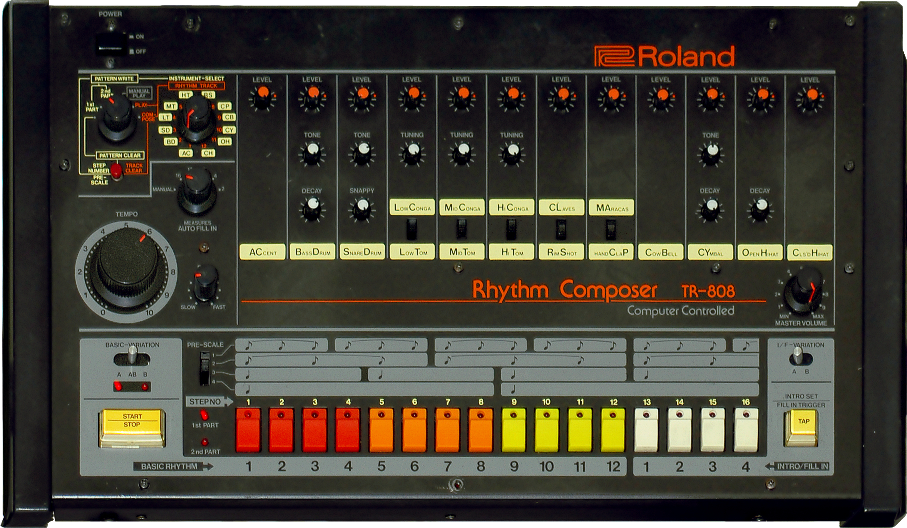
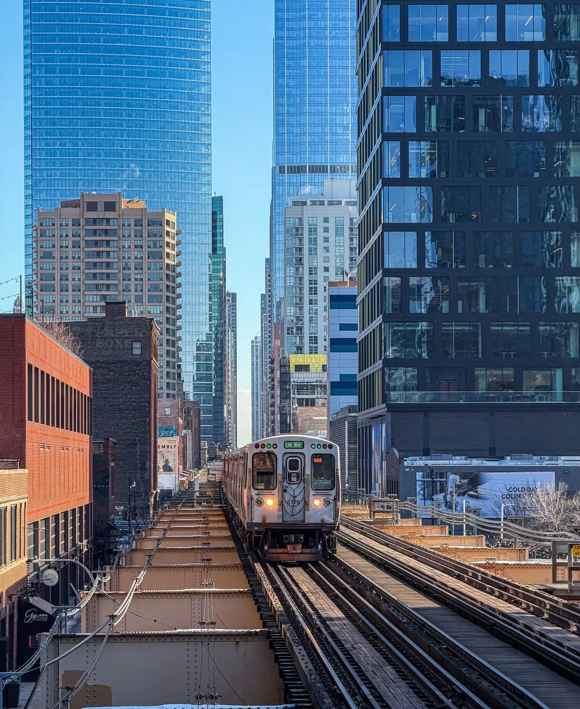
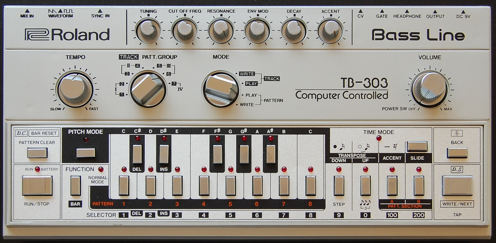
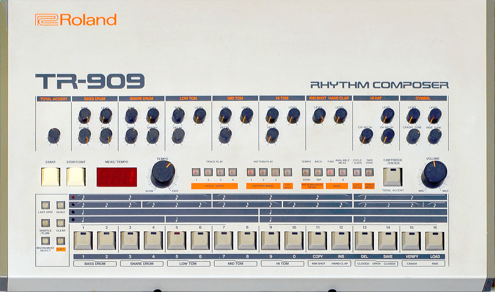
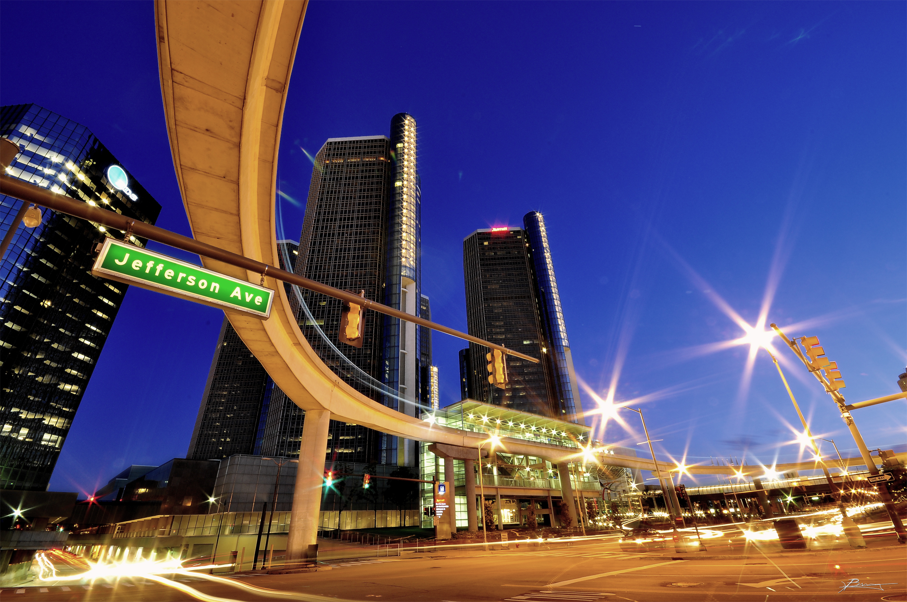

Tuesday · Music
Chicago (c. 1983–1989): , the , and the dance floor that survived disco's collapse
In 1977 moved from New York to DJ at , a gay club in Chicago's . When disco became commercially toxic after 1979, Knuckles kept playing, editing tracks on tape and using rhythm boxes to reinforce beats. Later, at , he acquired a drum machine from Detroit producer around 1984. Chicago producers made their own records using affordable equipment: 's "" (1984), 's "Move Your Body" (1986). In 1987 's "" introduced the bass synthesizer's squelching sound. The genre was called , named after . By 1989 it had crossed to the UK, where it became and the . Detroit developed at the same time as Chicago rather than growing out of it.

.jpg){kind=link}
Chicago house-era photographs from 1983–1989—club interiors, DJ booths, dance floors, and artist portraits—are mostly in commercial archives or private collections under copyright. , Music Box, and other club interior images from the era are rare and often copyrighted. This lesson uses equipment photographs (, , ), street and building images from Chicago, Detroit, and , all captioned as what they are: places and objects, not portraits. Where a free-license portrait could not be verified, the lesson does without. All YouTube links point to official or Topic uploads; when official audio is unavailable the note explains what the link is. No AI images of people. No invented facts, quotes, or numbers.
Select any words, or tap a dotted term.
- Before 1977 Disco's peak and the DJ as remixer In the mid-1970s disco DJs in New York— at , at , Nicky Siano at the Gallery—are building sets from extended 12-inch singles. Tom Moulton pioneers the extended remix. works at the and other New York clubs. In Chicago, disco is played at clubs like the Bistro and the Den, but the city has no equivalent to New York's .
- 1977 The Warehouse opens; Frankie Knuckles arrives in Chicago , a Chicago nightlife organizer, opens at in the . The club is a three-story former factory. Williams recruits , a New York DJ, to be the resident. opens as a members-only club, predominantly gay, predominantly Black. Admission is $4; the club serves free juice and water. Knuckles plays from midnight Saturday to noon Sunday, mixing disco, soul, and European imports. The sound system, designed by Williams, is loud and precise. becomes Chicago's answer to .
- 12 Jul 1979 Disco Demolition Night; disco records become scarce On 12 July 1979 rock DJ organizes at in Chicago. Fans bring disco records; Dahl detonates them in center field. The crowd storms the field; the game is forfeited. After Demolition Night, radio stations drop disco. Record labels stop pressing disco singles. By late 1979 disco is commercially dead. For DJs like , disco records become harder to find. Knuckles starts editing tracks himself, using a tape deck to extend breaks and replace worn-out sections.
- 1980–1982 Knuckles adds drum machines and re-edits; Ron Hardy at the Music Box Knuckles begins adding drum machine patterns—using basic rhythm boxes and tape editing—on top of disco tracks, filling gaps or reinforcing beats. This is not yet original production; it is re-editing and augmentation. In 1982 becomes the resident DJ at , a club at 326 N. Michigan Avenue. Hardy's style is more chaotic than Knuckles's: faster tempos, wilder mixes, raw energy. and become the two poles of Chicago's underground dance scene.
- 1983 First Chicago house tracks emerge; local production begins In 1983 Chicago DJs and bedroom producers begin making their own tracks using drum machines, synthesizers, and samplers. Affordable secondhand equipment becomes available: and drum machines, bass synthesizers (discontinued in 1984, making them cheap on the used market), Korg and Yamaha synthesizers, and four-track recorders. , , , and are among the first producers. The music sounds like disco— kick, repetitive bass lines, soulful vocals—but it is made by one or two people in home studios, not by session musicians in commercial facilities.
- 1984 Jesse Saunders releases "On and On"; house music is named In January 1984 releases "" on his own Jes Say Records label, pressed in a small run and distributed to Chicago record shops. The track uses a , a Korg synthesizer, and a simple bass line. It is widely cited as one of the first records, though the term "" is not yet widespread. By 1984 the music being played at and Music Box is called "," named after . left in 1982 and opened in 1983; the name "" spreads to other clubs and record shops.
- 1985–1986 Trax Records and DJ International; Marshall Jefferson's "Move Your Body" In 1984 founds in Chicago; in 1985 founds . These labels release early singles, distributed initially to Chicago record shops and later to New York, Detroit, and Europe. In 1986 releases "" on Trax. The track has a kick, piano stabs, and lyrics celebrating . It becomes an anthem. Other key releases: 's "" (1986), 's "Music Is the Key" (1985), and 's "" (1987, recorded 1984).
- 1987 Phuture releases "Acid Tracks"; the TB-303 defines acid house In 1987 the group —, , and —releases "" on Trax. The track runs approximately twelve minutes and is built almost entirely on the bass synthesizer, a 1982 device originally designed to emulate a bass guitar. twists the 's resonance and cutoff knobs, creating squelching, burbling, squealing sounds. The track has no vocals and a hypnotic, repetitive structure, with drum machine patterns (Roland TR-707) providing the rhythm. plays it at around 1985–1986 before its 1987 release; the response is immediate. "" defines , a subgenre named after the 's sound.
- 1987–1989 UK acid house and the Second Summer of Love; Balearic connection In 1987 British DJs—, , , Johnny Walker—visit and hear DJs mixing , disco, and electronic records. They return to London and open clubs: (Rampling, December 1987), (Oakenfold, April 1988), the Trip (Holloway, June 1988). Chicago , especially , becomes the soundtrack. In 1988 and 1989 the UK experiences the : warehouse parties, outdoor raves, (), and . The genre crosses into the UK pop charts: S'Express's "Theme from S'Express" (1988), Bomb the Bass's "Beat Dis" (1988), D Mob's "We Call It Acieed" (1988). By 1989 is a UK phenomenon, and is a global format.
- 1989 House music goes mainstream in the UK; Chicago remains underground In 1989 dominates UK clubs and charts. The Stone Roses, Happy Mondays, and other "Madchester" bands fuse indie rock with beats. In Chicago, remains largely underground. moves to New York and releases his debut album in 1991. dies in 1992 from AIDS-related complications. closes in 1987. By the late 1980s has spread to New York (), Detroit (), and Europe, but Chicago's club scene declines. The music outlives its original venues.
Before
Disco's underground after Demolition Night: when the records stopped coming
In August 1977 moved from New York to Chicago. He had been DJing at the and other clubs in Manhattan, playing disco and soul. , a Chicago promoter, had opened at in the —a three-story former factory converted into a dance club. Williams wanted a New York-style DJ, and Knuckles accepted. was a members-only club, open from midnight Saturday to noon Sunday. Admission was $4. The club served free juice and water, no alcohol. The clientele was predominantly gay, predominantly Black. The club was a space for people who were not welcome at Chicago's established clubs.
Knuckles played disco—Salsoul, Philadelphia International, European imports—just as he had in New York. had a powerful sound system designed by Richard Long & Associates, known for installing systems at clubs like and Studio 54. The bass was physical. The room was dark, the lights minimal. People danced for hours. By 1979 had a reputation: it was Chicago's answer to in New York, though smaller and less famous. But in 1979 disco collapsed commercially. On 12 July, rock DJ organized at . Fans brought disco records; Dahl blew them up. The crowd stormed the field. The event was broadcast nationally. Radio stations dropped disco. Labels stopped pressing singles. By late 1979 disco was industry poison.
For Knuckles, this meant the records stopped coming. New disco releases dried up. The 12-inch singles he had been buying from New York distributors were no longer being made. He played what he had—older disco, soul, early electronic records from Europe—but the supply was finite. Knuckles started re-editing tracks using a tape deck, splicing sections together, extending breaks, and removing worn-out sections. He also used basic rhythm boxes and drum machines to add percussion patterns on top of disco tracks, filling gaps or reinforcing beats that had faded on worn vinyl. Knuckles was augmenting existing records rather than composing new ones, but the method—re-editing plus drum machines—became the foundation of .
By 1982 , another Chicago DJ, was doing similar work at , a club at 326 N. Michigan Avenue on the lower level of the double-decked street. Hardy's style was more aggressive: faster tempos, rawer mixes, less smoothness. and were the two centers of Chicago's underground dance scene. Both DJs were playing music that no longer had a commercial name and was being built in real time on the dance floor.


The scene
The Warehouse, the Music Box, and the sound that had no name yet
By 1982 and had distinct identities. was : smooth, soulful, extended mixes, a focus on the journey from midnight to morning. was : chaotic, intense, faster, wilder. Hardy played tape edits that sounded like they were falling apart and reassembling. He used a deck on stage and cut between records mid-phrase. crowd was younger, more racially mixed, and included straight dancers alongside the gay clubgoers. Both clubs were underground. Both were unlicensed or operating in legal gray zones. Both played music that was not on the radio.
The music had elements: a kick drum (a kick on every beat, the disco constant), repetitive bass lines, synthesizer pads, soulful or gospel-inflected vocals, and a tempo around 120–130 BPM. The structure was simple—verse, build, drop, repeat—and tracks often ran six to ten minutes without a traditional chorus. This was music for dancing, not for radio. The break, the moment when the beat dropped out and then returned, was crucial. Dancers responded to the break physically. The DJ built tension and released it.
In 1983 left to open his own club, . closed shortly after. But by then the music being played at these clubs had a name: . The name came from . Record shops began labeling bins "" or "as heard at ." DJs and producers who made tracks in this style called them " tracks." The term stuck. By 1984 was a recognized genre in Chicago, even though it had almost no commercial presence outside the city.
The key figures in the early Chicago scene—, , (), , , , , , —were not professional musicians. They were DJs, bedroom producers, and record-shop clerks. They bought drum machines and synthesizers secondhand or on installment plans. The (discontinued in 1983, which made it cheap on the used market), the (released in 1983), the bass synthesizer (discontinued in 1984, also cheap), and Korg and Yamaha synthesizers were the tools. A four-track recorder and a mixer were enough to make a track. , after leaving and opening in 1983, acquired a from Detroit producer around 1984 and began playing it live under records at the club.
1984–1986
Jesse Saunders, Trax Records, and the first house releases
In January 1984 pressed 500 copies of "" and distributed them to Chicago record shops. The track was simple: a kick drum, a Korg synthesizer melody, a bass line, and Saunders's own vocals. Saunders had made the track at home with producer Vince Lawrence, recorded it on a four-track, and paid for the pressing himself. "" is often called the first record, though the claim is disputed—other producers were making similar tracks around the same time. What is clear is that by early 1984 Chicago producers were releasing on vinyl, and record shops were selling it.
In 1984 founded in Chicago. In 1985 founded . These were small independent labels, initially pressing a few hundred copies per release and distributing to Chicago shops. Trax and became the two main outlets for . 's "" (Trax, 1986) became the genre's defining track: kick, piano chords, and lyrics that celebrated explicitly. 's "" (, 1986) was a track that crossed to the UK charts. and 's "" (Trax, 1987, recorded 1984) blended soulful vocals with drums and became a standard.
The tracks were pressed as 12-inch singles, the same format disco had used. DJs bought them from shops like on North Clark Street or on East Ohio Street. Some tracks sold hundreds of copies in Chicago and thousands in New York, Detroit, and London, where was spreading through DJ networks and import shops. But most records sold modestly. The genre was not on commercial radio. MTV did not play videos. was a DJ and club format, not a pop format—at least not yet.
By 1986 had recognizable subgenres. (, ) was slower, warmer, more jazz-influenced, with lush pads and introspective melodies. (discussed below) was built on the 's squelching bass line. (, , ) had gospel-inflected singing over beats. All shared the kick, the 120–130 BPM tempo, and the DJ-friendly structure. The genre's center was still Chicago, but it was beginning to spread.
1987
Phuture, the TB-303, and the sound that defined acid house
The was released in 1982 as a bass accompaniment device for guitarists. It was designed to emulate a bass guitar, but it failed: the sound was thin, synthetic, and unconvincing. Roland discontinued it in 1984. By the mid-1980s TB-303s were showing up in Chicago pawn shops and second-hand music stores for $50 or less. (Nathaniel Pierre Jones), a Chicago DJ and producer, bought one and started experimenting. He twisted the 's resonance and cutoff knobs while the sequencer was running, creating squelching, burbling, squealing sounds that had nothing to do with bass guitar.
In 1987 , working with and under the name , recorded "." The track ran approximately twelve minutes and was built almost entirely from the , with Roland TR-707 drum patterns providing the rhythm. There were no vocals and a hypnotic, repetitive structure. The line twisted and mutated, moving from low rumbles to high squeals, with the resonance knob pushed to distortion. played "" at around 1985–1986 before its official 1987 release, and the response was immediate. Dancers called the sound "," either as slang for the 's intense, hallucinogenic quality or as a reference to the drug LSD, which was circulating in Chicago clubs.
"" was released on Trax in 1987. It defined , a subgenre of built around the . Other producers—, Armando, Fast Eddie—began using the on their tracks, and the squelching sound became the defining signature of . was raw, minimal, and repetitive, less soulful than and less warm than . The , designed to fail as a bass guitar emulator, became the defining instrument of because it did not sound like anything else.



.jpg){kind=link}
Elsewhere
Detroit techno as sibling, UK acid house, and the Second Summer of Love
In Detroit, roughly 280 miles northeast of Chicago, another electronic dance genre was emerging simultaneously. , , and —three Black teenagers from Belleville, a Detroit suburb—were listening to , , and Parliament-Funkadelic on the radio. They were also listening to , a Detroit DJ who played an eclectic mix. In the early 1980s they began making their own tracks using synthesizers and drum machines. , working as , released "No UFO's" in 1985. released "" in 1987. This was : colder, more abstract, more European-sounding than Chicago .
Detroit and Chicago developed at the same time rather than one growing out of the other. Both emerged from disco's collapse, both used the same machines (, , ), and both were made by Black producers in Midwestern cities with declining industrial economies. was more interested in futurism and less interested in soul. Where kept disco's soulful vocals and gospel energy, stripped them away. Detroit and Chicago influenced each other—DJs in both cities played each other's records—but they were parallel developments with different sounds and different goals.


In 1987 British DJs—, , , Johnny Walker—visited , a Spanish island in the Mediterranean. 's clubs played , a loose mix of , disco, rock, and electronic music. , an Argentine DJ at , was the key figure. The British DJs heard Chicago in and brought it back to London. In December 1987 Rampling opened at the Fitness Centre in Southwark. In April 1988 Oakenfold opened at Heaven. In June 1988 Holloway opened the Trip at the Astoria. These clubs played —, , —alongside UK-produced tracks. () was widely available and shaped the experience: euphoria, community, all-night dancing.
1988 and 1989 became known as the . Warehouse parties and outdoor raves spread across the UK. crossed into the pop charts: S'Express's "Theme from S'Express" (1988), Bomb the Bass's "Beat Dis" (1988), D Mob's "We Call It Acieed" (1988). The UK tabloids reacted with alarm: " Horror" and "Evil of " were newspaper headlines. The government passed the Entertainment (Increased Penalties) Act in 1990, cracking down on unlicensed raves. By 1990 had evolved into , jungle, and other UK dance genres. The 1988–1989 period was when Chicago became a British phenomenon, with at its center.

In other cities arrived through record imports and DJ networks. In New York, (named after ) emphasized soulful vocals and piano. In Paris, French producers like Laurent Garnier were playing Chicago imports by the late 1980s. In Japan, arrived through import record shops in Tokyo and Osaka. But the two key transmission routes for Chicago outside the US were Detroit ( as sibling) and the UK ( as explosion). By 1989 was no longer a Chicago secret. It was a global format.
After
House music leaves Chicago and becomes a format
By the late 1980s Chicago was spreading, but Chicago's club scene was declining. closed in 1982. closed in 1987. closed in 1987. died in 1992 from AIDS-related complications. moved to New York in the late 1980s and released his debut album, , in 1991. Many of the early Chicago producers left for New York, London, or Los Angeles. and continued to release records, but both labels were plagued by legal disputes, unpaid royalties, and poor distribution. as a commercial genre left Chicago.
In the 1990s evolved into dozens of subgenres: (New York), ('s legacy), (UK), (larger, anthemic structures), (minimal, loop-based), and eventually () in the 2000s and 2010s. The kick remained the constant. The , , and sounds became digital samples, reproduced in software like Ableton, Logic, and FL Studio. became the foundation for nearly every electronic dance genre that followed.
continued to DJ and produce until his death in 2014. In 2004 Chicago renamed part of Jefferson Street as . In June 2023 building at 206 S. Jefferson was designated a Chicago landmark, protecting it from demolition. The building no longer resembles the 1970s club—it has been renovated and repurposed—but the address is now officially recognized as the birthplace of . The genre that started in a single club in Chicago's became the dominant dance-music format worldwide.
What survived was the method. A DJ with a drum machine, a synthesizer, and a tape deck could make music for the dance floor without session musicians, without a studio, without a label's approval. The kick, the repetitive structure, the build-and-release dynamic, the DJ as both selector and producer—these became the template for . was disco's direct descendant. It was also the underground dance floor that the 1979 backlash tried to kill, surviving and evolving into a format that could be made by anyone with access to the right machines.
A question
A question to keep asking
If emerged from disco's collapse and was built by Black and gay communities in Chicago using cheap, discontinued equipment, why did the genre's commercial success in the 1990s and 2000s largely benefit white European and American producers and DJs? What happens to a culture when its tools become a format?
Fun fact
The Warehouse building at 206 S. Jefferson Street was landmarked in June 2023
, the club where DJed from 1977 to 1982 and where got its name, closed in 1982 when Knuckles left to open in 1983. The building at , a three-story former factory built in 1910, was used for other purposes after the club closed. In 2023 Preservation Chicago listed the building as one of the Chicago 7 Most Endangered. On June 21, 2023, the Chicago City Council granted the building final landmark designation, protecting it from demolition. The building is now recognized as the birthplace of , though the interior no longer resembles the 1970s club. was honored with a street sign——at Jefferson Street between Monroe and Van Buren in 2004, a decade before his death in 2014.